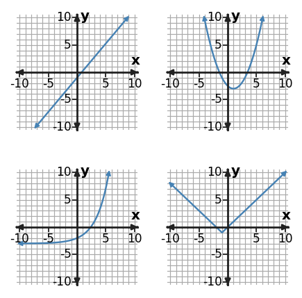
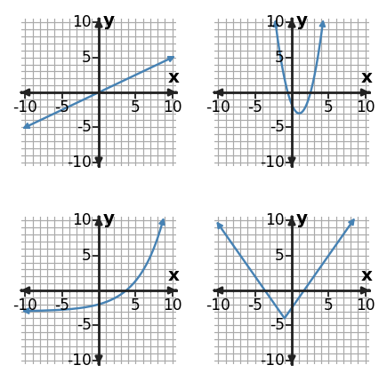

Algebra Practice 4.1 :::: Set 3
1. Classify the function family represented by $y=2x^2-1$. Give one feature of the equation that supports your classification.
2. Classify the function family represented by the table using the strongest numerical pattern in the values as evidence.
| x | y |
|---|---|
| 0 | 3 |
| 1 | 6 |
| 2 | 12 |
| 3 | 24 |
3. The top-left and bottom-left graphs both increase. Which one would produce constant first differences in a table, and which one would produce a constant ratio? Identify both families.

4. A table has constant first differences while a cropped graph window looks slightly curved. Decide which evidence is more reliable for classification.
5. Classify the function family represented by $y=2x^2-2$. Give one feature of the equation that supports your classification.
6. Classify the function family represented by the table using the strongest numerical pattern in the values as evidence.
| x | y |
|---|---|
| 0 | 3 |
| 1 | 12 |
| 2 | 48 |
| 3 | 192 |
7. Which graph is linear? For each of the other three graphs, name one visible feature that rules out a linear classification.

8. A table has a constant ratio of 3, but a small graph window looks almost straight. Use the family features in the representations. Which evidence is more reliable, and what family does it support?
9. Classify the function family represented by $y=2x^2+2$. Give one feature of the equation that supports your classification.
10. Use the table features to sort this relationship into a function family. Name the family and the feature you used.
| x | y |
|---|---|
| 0 | 4 |
| 1 | 3 |
| 2 | 2 |
| 3 | 3 |
| 4 | 4 |
11. Compare the top-left and bottom-left graphs. Identify both families and explain how their rates of change behave differently across the displayed window.

12. An equation is $y=2(x-1)^2+3$, while a rough sketch looks almost V-shaped near its minimum. Use the family features in the representations. Which evidence is decisive for the family?
13. Classify the function family represented by the table using the strongest numerical pattern in the values as evidence.
| x | y |
|---|---|
| -2 | 9 |
| -1 | 4 |
| 0 | 1 |
| 1 | 0 |
| 2 | 1 |
14. For equal steps in x, which increasing graph is associated with a constant additive change in y and which with a constant multiplicative change? Identify their positions and families.

15. If a small graph window made the bottom-left curve look almost linear, what additional representation would most decisively distinguish linear from exponential?

16. A table has constant first differences of -2, but a cropped graph looks slightly curved. Which representation gives the strongest evidence, and which evidence should control the classification?
17. Classify the function family represented by $y=2x^2$. Give one feature of the equation that supports your classification.
18. Which numerical pattern in the table is the strongest evidence for the function family? Use it to classify the relationship.
| x | y |
|---|---|
| 0 | 1 |
| 1 | 3 |
| 2 | 5 |
| 3 | 7 |
19. Solve the system $ 2x+3y=17$ and $4x-3y=-11$. State the solution as an ordered pair.
20. Solve the system $ 3x+y=9$ and $6x-y=9$. State the solution as an ordered pair.
21. Solve the system $ x+2y=7$ and $2x-2y=-10$. State the solution as an ordered pair.
22. Relationship A is $y=1.5x-4$. Relationship B is shown in the table. Which relationship changes faster, and which has the greater starting value?
| x | Relationship B |
|---|---|
| 0 | 2 |
| 2 | 4 |
| 4 | 6 |
23. Relationship A is $y=2x+4$. Relationship B is shown in the table. Which relationship changes faster, and which has the greater starting value?
| x | Relationship B |
|---|---|
| 0 | -2 |
| 1 | 1 |
| 2 | 4 |
24. Relationship A is $y=4x-3$. Relationship B is shown in the table. Which relationship changes faster, and which has the greater starting value?
| x | Relationship B |
|---|---|
| 0 | 1 |
| 2 | 5 |
| 4 | 9 |